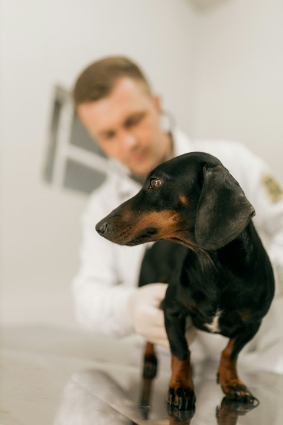
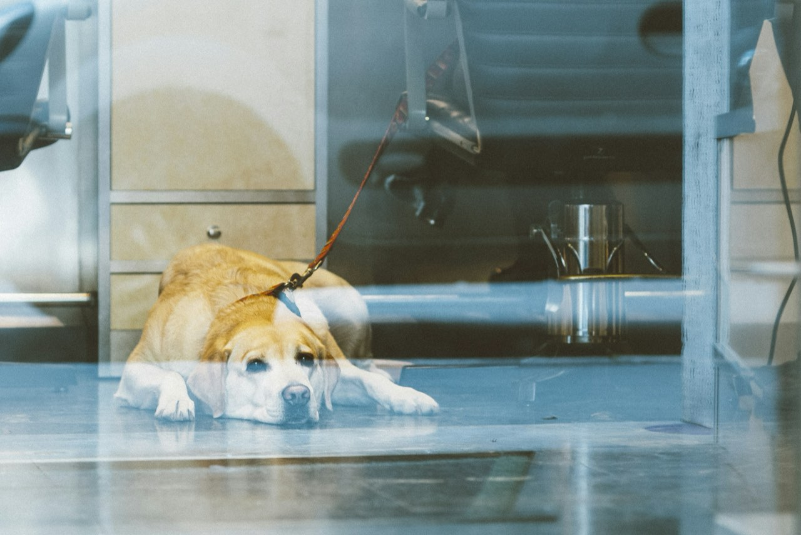
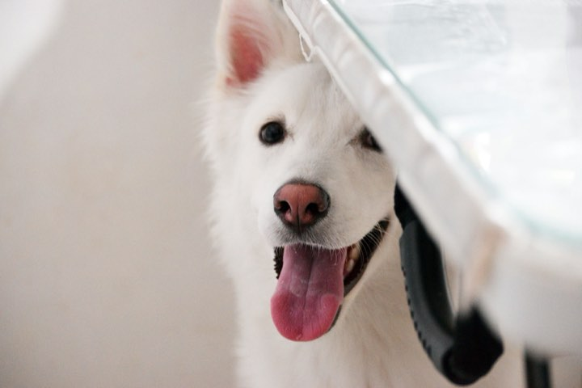
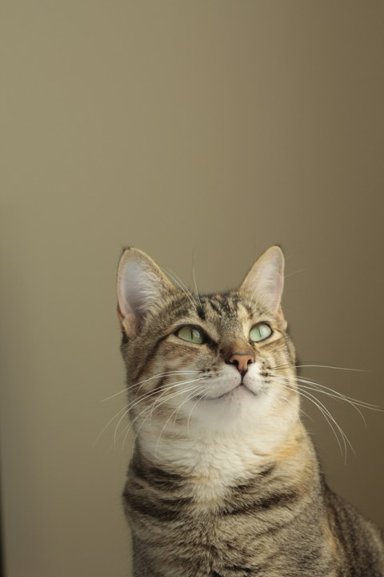
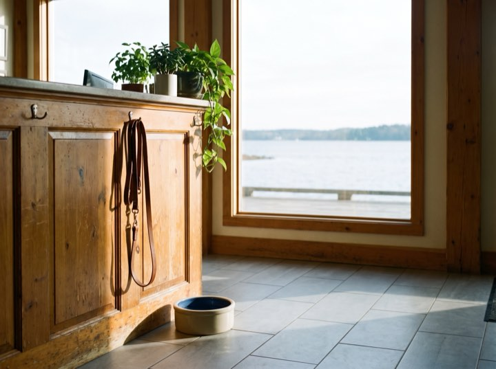
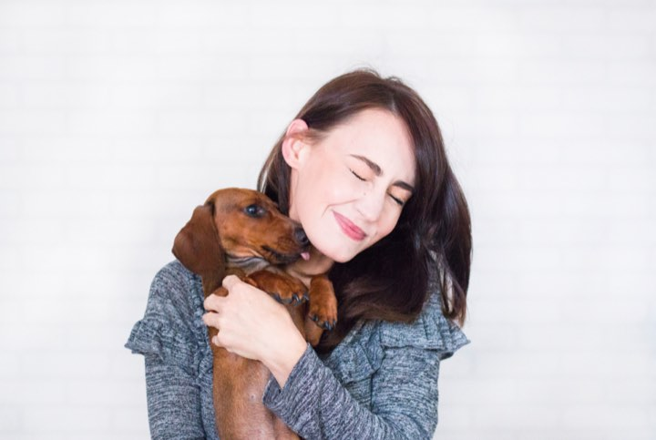
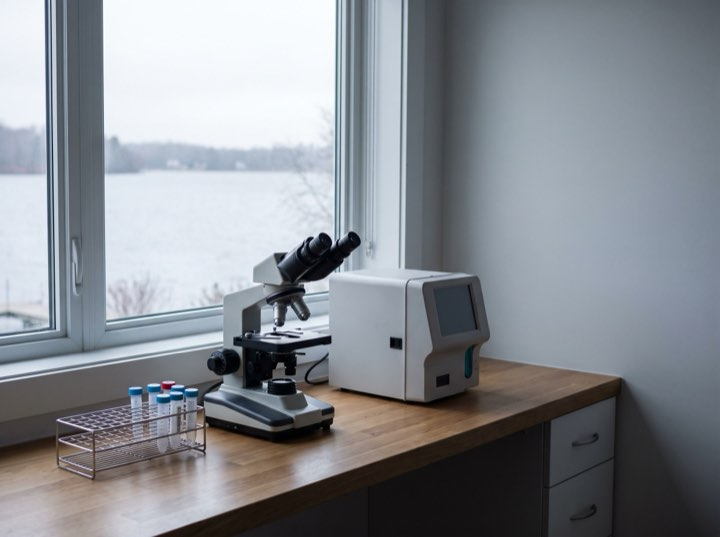
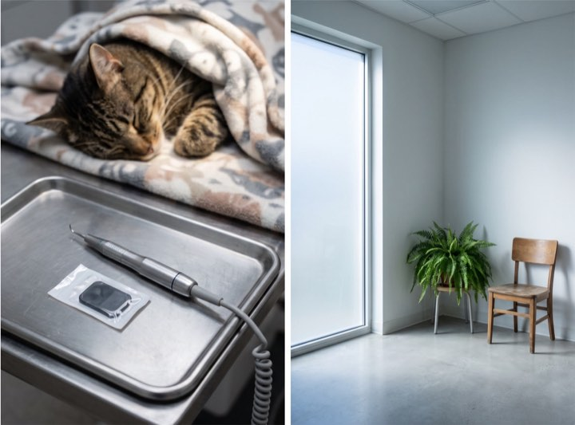
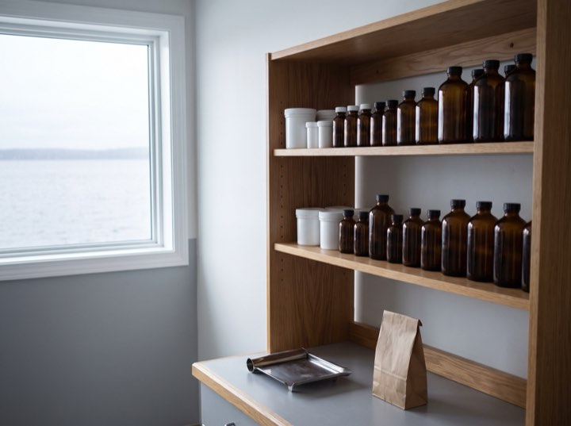

01
Wellness & vaccination
Annual exams, vaccines and parasite prevention on a schedule we track for you, so you get a reminder rather than a guilty realisation.

Accepting new patients
Full-service small animal care with online booking and Saturday hours. Same-day slots are held back every morning for animals that were fine yesterday and are not fine today.
Services
Routine to surgical, with the same team seeing your animal each time wherever we can manage it.

01
Annual exams, vaccines and parasite prevention on a schedule we track for you, so you get a reminder rather than a guilty realisation.
02
First visit free. Everything the first year needs bundled at a set price, including spay or neuter and microchipping.

03
Under anaesthetic with full monitoring and dental radiographs. Most dental disease is invisible above the gumline.

04
In-house lab, digital radiography and ultrasound, so most answers come the same visit rather than next week.
Held for today
Slots held every morning for the animal that was fine last night. The exam room and the lab are ready for them.







Results
“Booked online at 10pm. Nobody else let me do that.”
Ines R. · Wellness visit“Refill requests without a phone call is such a small thing and such a relief.”
Paul D. · Long-term client“They explained the dental x-rays instead of just billing for them.”
Cara J. · Dentistry“Saturday hours mean I don’t burn a day of leave.”
Miguel T. · VaccinationsProcess
Especially for a first pet, where nobody tells you what actually happens.
Pick a real slot on a real calendar, any hour. You get a confirmation, not a promise to call you back.
Bring any records you have. First visits run long on purpose, because we’d rather answer everything now.
You get a written care plan with costs before anything is done, and we’ll tell you what can wait.
Reminders when things are due, refills online, and a direct line for the questions that feel too small to phone about.
Contact
We are accepting new patients and we keep same-day sick slots open. Book online in a minute, or ring and we will find you something.
Emergencies after hours: call and our recording routes you to the on-call emergency hospital.